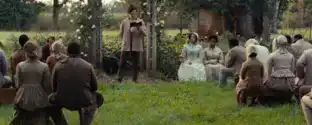
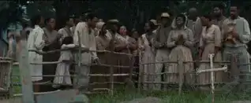

Steve Mc Queen est le réalisateur du film 12 Years a Slave
qui est sorti en 2013 au cinéma. Son envie de faire le film
vient de sa lecture de la biographie de Solomon Northup
: homme libre qui s’est retrouvé esclave du jour au
lendemain.
Qui est le réalisateur de "12 years a slave"
Steven Rodney Mc Queen est né en octobre 1969 à
Londres.Il a étudié à l’université de Londres et a étudié
à Chelsea, c’est un artiste contemporain et un
réalisateur britannique qui est
apparu au cinéma en
2008
alors qu’il était déjà connu comme installateur
vidéo.Il traite dans ses films de sujets sérieux tels que la
grève de la faim, l’addiction et l’esclavage.
Son premier film s’intitule « Hunger » il obtient la
Caméra d’or
au festival de Cannes 2008 et le BAFTA
awards du meilleur espoir britannique en 2009.
L’Imperial War Museum le nomme
artiste de guerre
oficiel en Irak mais il lui est impossible de filmer le
conlit.Il photographiera alors des portraits de famille
de soldats mort au combat.
En 2010, il est nommé
« Commandeur »
de l’ordre de
l’empire britannique pour son service rendu aux arts
visuels.
En 2014 il reçoit
« l’Achivement in World Cinema Award »
aux European Film Awards.
Pourquoi a-t-il eu envie de faire le film
« c’est l’histoire de l’Amérique et l’esclavage
en fait partie » Mc Queen
Le réalisateur
a des ancêtres esclaves
dans les Caraïbes.
Intéressé alors par ce sujet
il lit le livre de Solomon Northup
et reste bouche bée.Il dira que
« c’est le journal
d’Anne Frank del’Amérique »
et décidera de le faire
connaitre.
Il décide de l’adapter en film, pour lui, c’est
un honneur d’adapter ce chef d’œuvre :
« c’est l’histoire de
l’Amérique et l’esclavageen fait partie »
Pour acheter le livre "12 years a slave" cliquer
ici
Quels messages a-t-il voulu faire passer ?
Dans ce film il traite du sujet grave qu’était l’esclavage.
« 12 Years a Slave »
nous montre
l’absurdité
qu’était
l’esclavage. Bien qu’instruits, certains esclaves sont
réduits à
l’état d’animaux
. Elle ne fait que s’intensifier
lorsque nous voyons que Solomon et les autres esclaves
sont réduits à un objet :
ils sont renommés, mis à nus,
on vente leurs qualités, leurs défauts et on les achète
comme des
« propriétés ».
Dans ce film, le réalisateur traite aussi du lien ambigu
de la
religion
avec l’esclavage. La religion est présente
plusieurs fois : les maîtres utilisent les textes de la Bible
pour justifier leurs droits d’utiliser la violence contre
leurs esclaves désobéissants ou moins endurants. Bass
lui, au contraire soutient le fait que la Bible interdit les
esclaves : les hommes étant tous égaux.

Le maitre des esclaves leur lisant la bible
Il y a aussi dans
« 12 years a slave »
, une volonté du
réalisateur de toujours suggérer le passé libre qu’a eu
Solomon.
Ancien homme
libre qui ne s’intéressait pas
ou presque aux autres esclaves qu’il pouvait croiser,
maintenant, il en fait partie.Il y a aussi ce violon qui
représentait sa profession en tant qu’homme libre qui
est toujours présent quand il est esclave. De plus,
le
réalisateur joue avec le cadrage
qu’il utilise deux fois
identique : prêt d’une fenêtre au début du film dans ses
beaux habits sous les applaudissements, Solomon se
retrouve au milieu du film dans des guenilles, l’air
absent.Il a également toujours cette envie de liberté, ce
sentiment d’injustice qu’il ne montre pas et qu’il utilise
comme force pour résister 12 ans. On revoit aussi à
travers sa vie d’esclave son passé, qu’il regrette.
Dans ce film, l’auteur nous interroge :
si Solomon survit
pour retrouver sa famille, qu’en est-il des autres ?
C’est vrai, nous ne voyons pas les esclaves rirent, ils
vivent dans la
peur constante
, ne parlent presque pas et
osent à peine se regarder. Pourquoi continuent-ils alors
de vivre ? C’est ce que Patsey nous fera comprendre
lorsqu’
elle demandera à Solomon
de la tuer contre un
objet quelconque.
Mais, ce qu’a voulu nous montrer le réalisateur avec tous
ces esclaves qui résistent à cette vie c’est tout
simplement
la force qu’ils avaient
. Ils n’ont jamais
renoncé au statut d’humain. Nous pouvons le
comprendre dans tous les chants qui regroupent ces
esclaves quand ils travaillent.Ils sont unis,
n’abandonnent pas, et survivent malgré tout.

Les esclaves arrivant chez leur nouveau maitre
En fait, ce film traite de
la vie des esclaves au quotidien.
Une
mère
séparée de ses deux enfants,
une femme
violée par son maître et battue par sa maîtresse. Et, un
homme libre et instruit qui se retrouve à devoir
supporter des coups de fouets pour